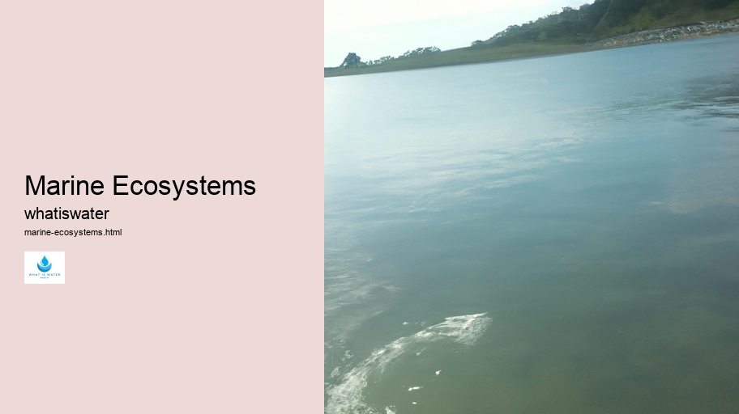
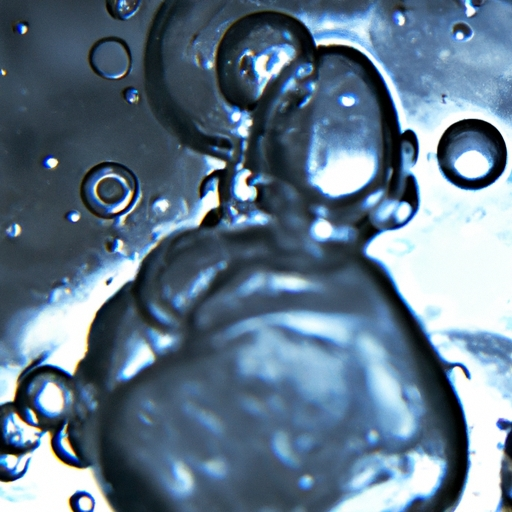

Hydrological Cycle
Hydrological Cycle
Evaporation and transpiration
Condensation and cloud formation
Precipitation and rain patterns
Surface runoff and river systems
Groundwater flow and aquifers
Snowmelt and glacial processes
Water storage in oceans lakes and reservoirs
Soil moisture and infiltration
Water balance and budgeting
Human impact on the hydrological cycle
Marine Ecosystems
Marine Ecosystems
Coral reefs and their biodiversity
Mangrove forests as coastal protectors
Ocean currents and climate regulation
Deepsea habitats and extremophiles
Intertidal zones and estuarine ecosystems
Marine food webs and trophic levels
Freshwater Ecosystems
Freshwater Ecosystems
Conservation efforts for marine species
Marine biogeochemical cycles
Impact of global warming on oceans
Water Resource Management
Water Resource Management
Rivers streams and creeks ecosystems
Lakes ponds wetlands habitats
Biodiversity in freshwater environments
Aquatic plants role in oxygenation
Freshwater fish species diversity
Invasive species impact on freshwater systems
Pollution threats to freshwater sources
Conservation strategies for freshwater biomes
Role of wetlands in flood control
Importance of riparian buffers
Cultural Significance of Water
Cultural Significance of Water
Sustainable water use practices
Desalination technologies for fresh water supply
Wastewater treatment processes
Rainwater harvesting techniques
Management of water during drought conditions
Transboundary water resource politics
Infrastructure for water distribution
Agricultural irrigation efficiency
Urban water demand management
Impact of climate change on water resources
About Us
Contact Us

Marine Ecosystems
Water Sports and Recreation
Marine ecosystems encompass vast, diverse environments where life thrives beneath the waves of the world's oceans. These underwater communities are integral to global health, providing essential services from food supply to climate regulation. Spanning from shallow coral reefs to mysterious deep-sea trenches, these habitats support an array of unique species and complex interactions.
The delicate balance within marine ecosystems is maintained through intricate food webs.
Marine Ecosystems - Water Sports and Recreation
Virtual Water
Water Management
Aquatic Ecosystems
Water Efficiency
Climate Change and Water
Here, microscopic plankton form the base, supporting fish, mammals, and even apex predators like sharks. Coral reefs, often termed 'rainforests of the sea,' boast incredible biodiversity.
Virtual Water
These structures are not just biotic wonders but also serve as protective barriers for coastlines against erosive forces.
Human activities increasingly threaten marine systems; pollution, overfishing, and climate change pose severe risks.
Aquatic Ecosystems
Rising temperatures lead to coral bleaching events while acidification endangers shell-forming organisms. The loss of any single element can have cascading effects throughout the ecosystem.
Conservation efforts are crucial in safeguarding these underwater worlds. Marine protected areas (MPAs), sustainable fishing practices, and pollution reduction initiatives represent steps towards preserving oceanic health.
Climate Change and Water
Water Efficiency
Water Management
Research and technology advancements provide new insights into these enigmatic domains—each discovery highlighting our interconnectedness with these vital aquatic landscapes.
To ensure future generations inherit a flourishing planet with robust marine ecosystems, collective action must be prioritized globally. Only then can we hope to maintain the wondrous diversity and ecological functions that our seas so generously offer humanity and all living beings on Earth.

Hydrological Cycle
Check our other pages :
Hydrological Cycle
Agricultural irrigation efficiency
Freshwater fish species diversity
Conservation efforts for marine species
Frequently Asked Questions
What defines a marine ecosystem and what are its key components?
A marine ecosystem is a dynamic environment consisting of living organisms (animals, plants, and microbes) interacting with each other and their physical surroundings in saltwater habitats such as oceans, seas, coral reefs, and estuaries. Key components include abiotic factors like water temperature, salinity, currents, and sunlight; biotic factors such as various species of fish, mammals, invertebrates, plants like algae and seagrasses; and the complex relationships among these elements that contribute to the food web.
How do human activities impact marine ecosystems?
Human activities significantly impact marine ecosystems through pollution (plastic waste, oil spills), overfishing which depletes fish stocks and disrupts food chains, habitat destruction (such as coral reef damage from mining or coastal development), climate change leading to ocean acidification and rising sea temperatures which affect species distribution and reproductive cycles. These activities can lead to loss of biodiversity and threaten the overall health of marine ecosystems.
Why is it important to conserve marine ecosystems?
Conserving marine ecosystems is crucial because they provide vital services including oxygen production through photosynthesis by phytoplankton; carbon sequestration helping mitigate climate change; food resources for billions of people worldwide; medicinal compounds derived from unique marine organisms; protection against shore erosion via structures like coral reefs; recreational opportunities enhancing quality of life. Moreover, maintaining healthy marine ecosystems ensures the stability of global ecological balance.